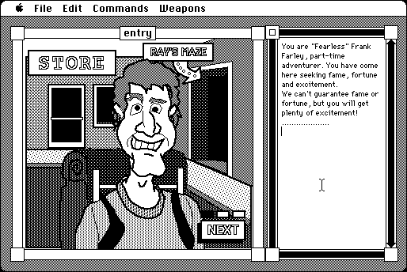

Download
rays-maze-15.zip (1.3M) Ray’s Maze 1.5 repackaged into a zipped hfs disk image and checksum file. The disk image can be mounted with Mini vMac.
rays-maze-15.bin (1.4M) Ray’s Maze 1.5 in the original format.
copyright: Ray R. Dunakin III and William C. Appleton
mod date: Sep 21, 1992
license: shareware
official url :
The Ray’s Maze Page
An adventure game made with World Builder. "Anything can happen in the mixed-up worlds of Ray’s Maze."

Download Sequels
afm-18.zip (1.3M) Another Fine Mess 1.8 repackaged into a zipped hfs disk image and checksum file. The disk image can be mounted with Mini vMac.
afm-18.hqx (1.8M) Another Fine Mess 1.8 in the original format.amot-18.zip (1.4M) A Mess O’ Trouble 1.8 repackaged into a zipped hfs disk image and checksum file. The disk image can be mounted with Mini vMac.
amot-18.hqx (1.9M) A Mess O’ Trouble 1.8 in the original format.twisted-16.zip (1.1M) Twisted 1.6 repackaged into a zipped hfs disk image and checksum file. The disk image can be mounted with Mini vMac.
twisted-16.hqx (1.6M) Twisted 1.6 in the original format.
If you find these downloads useful, please consider helping the Gryphel Project, which hosts them.
Here are the md5 checksums for the downloads, signed with Gryphel Key 5:
--------- GRY SIGNED TEXT --------- a862c1a6a3e60686ff8f9a2a71fff41d rays-maze-15.zip 18a468caa6ec721d2bdccabef2e3c3ab rays-maze-15.bin 7a62ed039f214494daa34bc34b770fa9 afm-18.zip 1c7b3ae4b88339a590f3a9939db74a1f afm-18.hqx fcfd2b4dc8892d783dd9ecfa388d6c11 amot-18.zip b77ec5e5cac4b59d10a8b8ee3025f197 amot-18.hqx c8ea2e9f1d73c77668e1036308317035 twisted-16.zip 10429bd575dec51a8df55964423e01d4 twisted-16.hqx ------- BEGIN GRY SIGNATURE ------- Gry/4Xa8CFcUzxdN/HXjHr9G21zMDJKh0+RDsNkH+2FWf7ge442032x9FdKlRqug H4AgcjwncsNYHmVdDv0hlbgnbpAak8PlBpOgWUI1qs/HjjyHH4/iDEuH+Osn2Uzs XQaBs/x2OhAaUy7yLFhfH+GikFLiMbFIePQe20OY+jlAzHivbPCy763kvNaQ3nEf -------- END GRY SIGNATURE --------